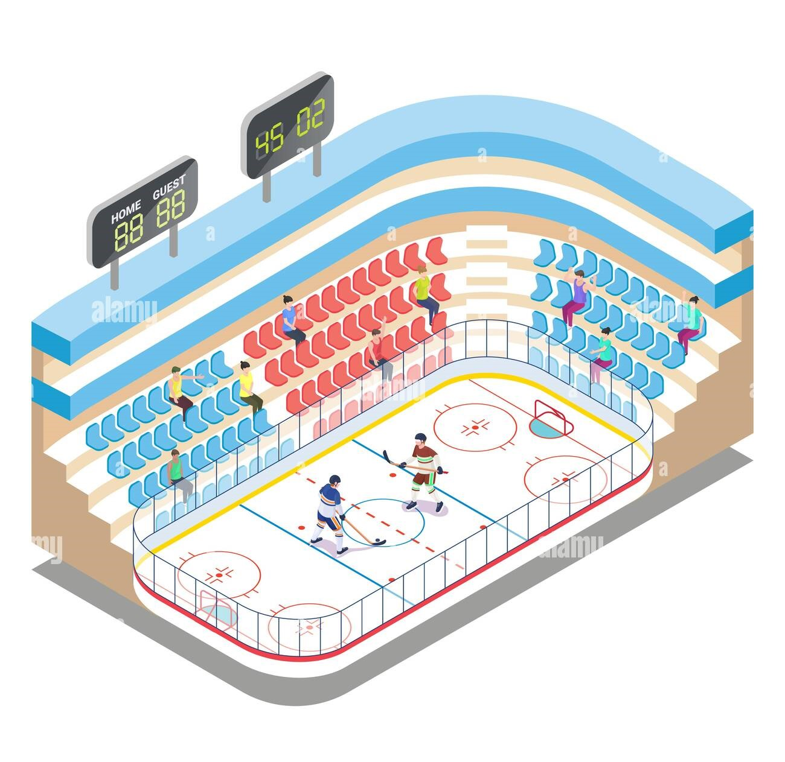

El principal organismo mundial que dirige el hockey sobre hielo es la
Federación Internacional de Hockey sobre Hielo, cuyo reglamento se
aplica en las competiciones internacionales y principales campeonatos de
Europa. Sin embargo, su influencia en Norteamérica es menor, ya que allí
se aplica el reglamento introducido por la National Hockey League. Las
diferencias entre ambos estándares son menores.
Cada partido de hockey consta de tres periodos de 20 minutos de duración
cada uno, y separados por dos intervalos de 5 minutos cada uno. Solo
se cuenta como tiempo de juego cuando el puck está en movimiento, y el
reloj se para cada vez que el disco se detiene. Esto puede suceder
cuando el árbitro señala una falta, se anota un gol o el puck sale del
campo. Hay un juez que se encarga de llevar el tiempo de juego, conocido
en inglés como game timekeeper. El equipo tiene derecho a un tiempo
muerto de 30 segundos por periodo. Si después de estos tres tiempos hay
un empate, se procede a jugar una prórroga de cinco minutos a muerte
súbita, en la que el primer equipo en anotar un gol gana (similar al gol
de oro que se aplicaba en el fútbol). En la NHL durante la temporada
regular, en la prórroga se juega a 4 contra 4 (con el portero), quedando
de la siguiente forma: 1 portero, 1 defensa, 1 centro y 1 extremo. Si
después de este periodo el empate persiste, el juego normalmente pasará
a una ronda de lanzamiento de tiros libres (penalty shot). En
eliminatorias en la NHL se jugarían prórrogas de 20 minutos a muerte
súbita a 5 contra 5 (portero incluido). En juego internacional, en
eliminatorias se jugaría una prórroga de 20 minutos a 4 contra 4
(portero incluido), seguida de una ronda de lanzamiento de penalti shots
si no se rompe la paridad.
Puntuación
En el hockey sobre hielo un punto tiene dos significados principales: Se
otorga un punto a cada jugador por cada gol anotado o asistencia
realizada. El número total de goles más las asistencias equivale al
número total de puntos. En algunas ligas europeas, el gol cuenta como
dos puntos y la asistencia como un punto. La National Hockey League,
liga privada de hockey sobre hielo profesional formada por franquicias
de Canadá y Estados Unidos, otorga anualmente el Trofeo Art Ross al
jugador que termina la temporada regular como líder en puntos. Los
puntos también se otorgan para determinar los lugares en la tabla de
posiciones por equipo. Por cada victoria, un equipo recibe tres puntos
en Europa y dos en Estados Unidos de América y Canadá. Cuando un equipo
empata, recibe sólo un punto.
